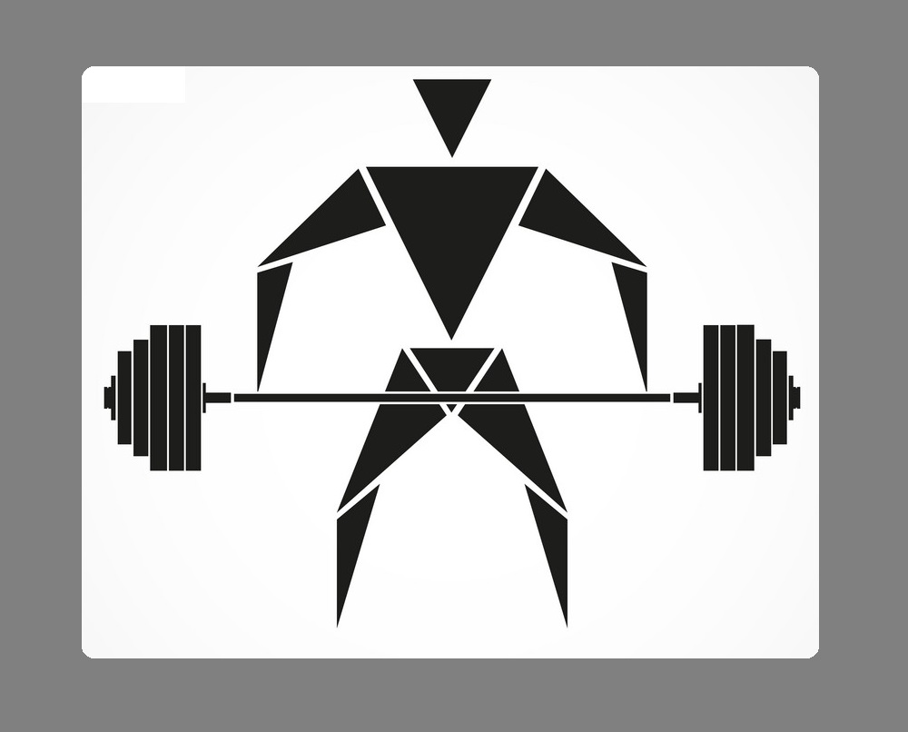
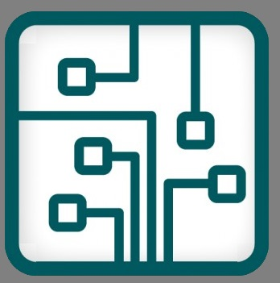

INTRODUCTION
Hello Everyone,
It is my absolute pleasure to introduce myslef. Well i'm Shafwan Ahmed and i am from Dhaka, Bangladesh. I am currently preparing myself for my upcoming A'levels exam under Edexcel British Council.
My mental and physical strengths are my determination and my ability to take any kind of challenges and hardwork respectively.In terms of weaknesses, I think of it as scope for improvement. I always stay prepared all the time by thinking the worst case scenario possible of a particular situation. My goal in life is to make a change for the betterment in a engineering platform because working with such equipments has always been my strength.
You will have Furtherindepth information on the other sites I have entitled below. For now that's all about me.
Thank You.
| HOME |
INTRO |
 HOBBY |
 EXTRACURRICULAR |
SOCIAL MEDIA |
|---|